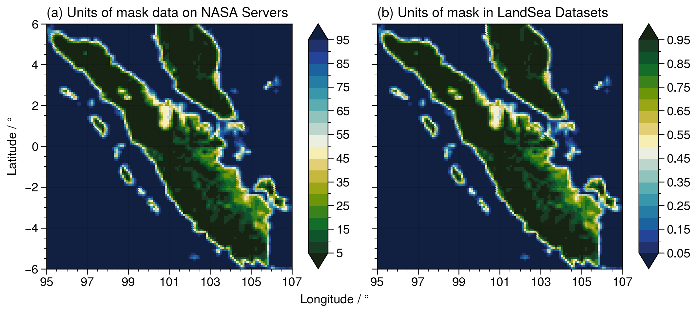

Land-Sea Mask Datasets
Similar to ETOPO 2022, NASA also provides global land-sea masks at the same resolution as the IMERG and TRMM datasets. NASAPrecipitation.jl - in a manner similar to GeoRegions.jl for ETOPO 2022 data - is able to retrieve the land-sea mask datasets provided by NASA that allows for us to easily distinguish between precipitation data points over land and over the ocean.
This land-sea mask is then saved into a LandSea data type, which is defined to be a subType of the LandSeaFlat abstract type in GeoRegions.jl.
For standardization purposes, NASAPrecipitation.jl converts the land-sea mask provided by NASA to the same units as the LandSea Dataset provided by GeoRegions.jl
0 represents fully ocean, while 1 represents fully land.
See the figure below:

NASAPrecipitation.LandSea — TypeNASAPrecipitation.LandSea <: GeoRegions.LandSeaFlatObject containing information on the Land Sea mask for IMERG or TRMM, a subType extension of the GeoRegions.LandSeaFlat superType
GeoRegions.AbstractLandSea — TypeAbstractLandSeaAbstract supertype for LandSea Datasets, with the following subtypes:
LandSeaTopo <: AbstractLandSea
LandSeaFlat <: AbstractLandSeaBoth LandSeaTopo and LandSeaFlat types contain the following fields:
lon- Vector containing the longitude points for the Land-Sea Datasetlat- Vector containing the latitude points for the Land-Sea Datasetlsm- Array containing data regarding the Land-Sea Mask. 1 is Land, 0 is Ocean, NaN is outside the bounds of the GeoRegionmask- Mask determining if point is within the GeoRegion or not. 1 istrue, 0 isfalse.
A LandSeaTopo type will also contain the following field:
z- Array containing data regarding the Orographic Height in meters. NaN is outside the bounds of the GeoRegion